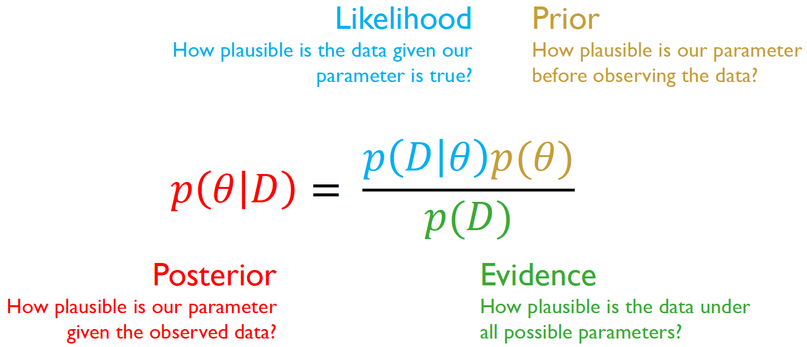
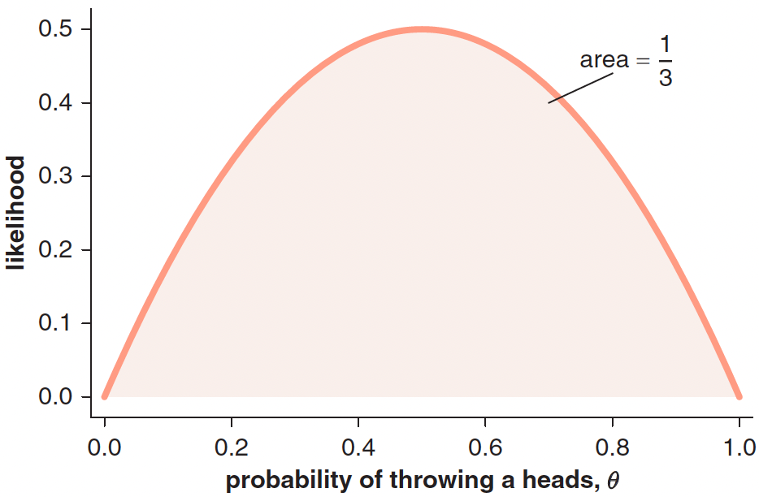
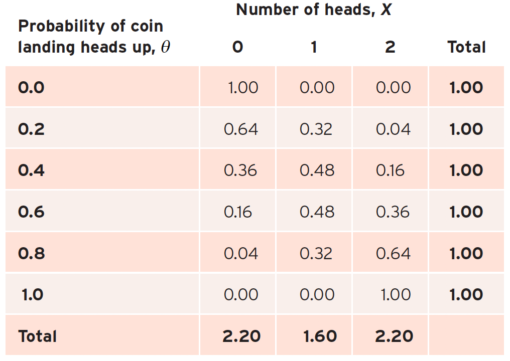
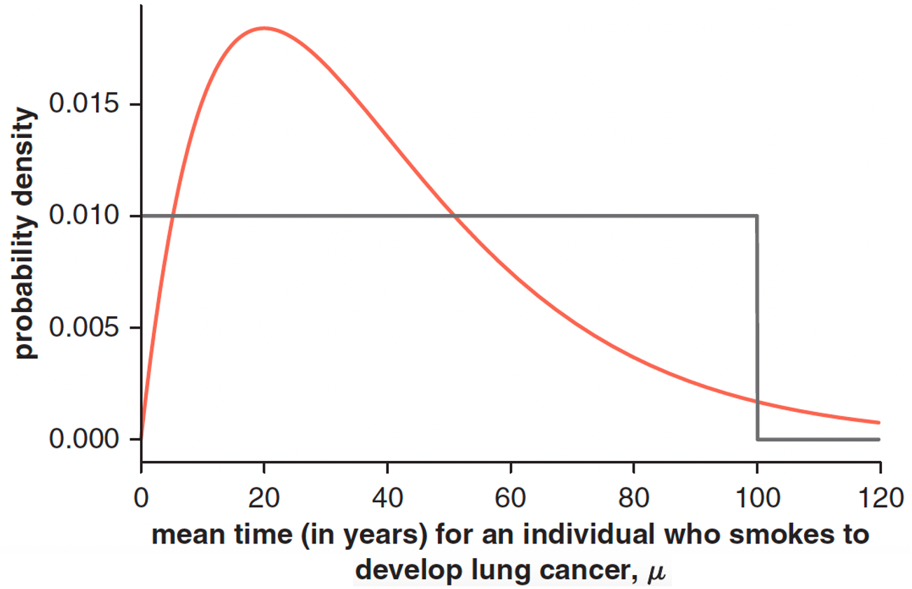
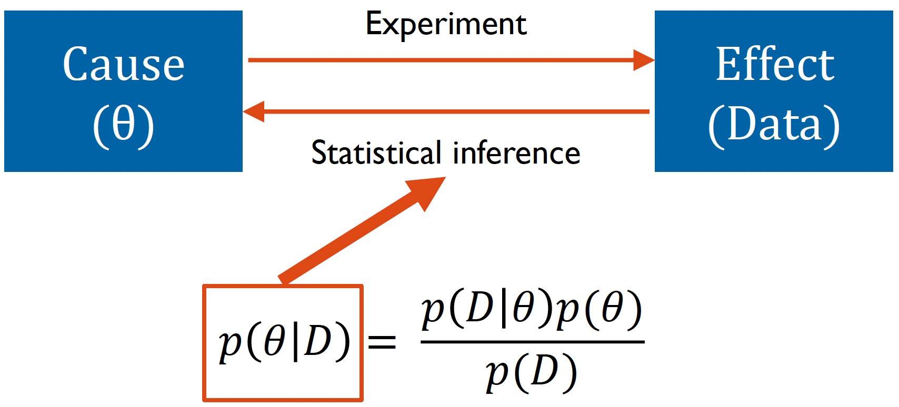

Linking data to parameters
Understanding how Bayesian inference allows us to update our beliefs with data
“Probability is orderly opinion and inference from data is nothing other than the revision of such opinion in the light of relevant new information.” - Popular Bayesian maxim
In our last lecture, we covered fundamental concepts in probability theory.
We firstly learned that probability measures how likely events are to occur, with some basic properties, namely that:
- Probabilities must be between 0 and 1
- The sum of all probabilities for an event must equal 1
We also learned about the different types of probability events, discrete and continuous:
- Discrete events use probability mass functions (PMF) for countable outcomes
- Continuous events use probability density functions (PDF) and cumulative distribution functions (CDF) for infinite possible outcomes
As well as three important probability concepts:
- Joint probability: likelihood of two events occurring together - \(P(A,B)\)
- Marginal probability: likelihood of one event regardless of others - \(P(A)\)
- Conditional probability: likelihood of one event given another has occurred - \(P(A|B)\)
And finally, we learned about Bayes’ theorem, a formula which allows us to update our beliefs based on new evidence in a probabilistic manner:
\[p(A|B) = \frac{p(B|A)p(A)}{p(B)}\]
Where:
- \(p(A|B)\) is the posterior probability - our updated belief about \(A\) after observing evidence \(B\)
- \(p(B|A)\) is the likelihood - probability of observing evidence \(B\) if hypothesis \(A\) is true
- \(p(A)\) is the prior probability - our initial belief about \(A\) before seeing any evidence
- \(p(B)\) is the marginal likelihood - total probability of observing evidence \(B\)
Or, more intuitively:
\[\text{Posterior} = \frac{\text{Likelihood} \times \text{Prior}}{\text{Marginal Likelihood}}\]
Reformulating Bayes’ theorem
Looking at the conventional Bayes’ theorem formula, we can re-write this to more accurately suit our goal of applying Bayesian inference to our statistical analyses.
Firstly, there is no particular reason or meaning behind the use of \(A\) and \(B\). It can be anything we like.
Secondly, when using Bayes’ theorem practically, we’re typically trying to solve a specific kind of problem: we have some data from an experiment or observation, and we want to learn something about the underlying process that generated that data. This typically involves estimating parameters from data.
- Parameters (\(\theta\)) represent the unknown quantities we want to learn about (like population means, effects of treatments, or probabilities of events)
- Data (\(D\)) represents our actual observations or measurements from our experiment
So, let’s simply recast the theorem in terms of parameters (\(\theta\)) and data (\(D\)):
\[p(\theta|D) = \frac{p(D|\theta)p(\theta)}{p(D)}\]
You can see how this reformulation directly maps to real research questions in the image below:

Let’s go through each component of this reformulation, starting with the likelihood.
Likelihood
Let’s use a simple example to understand the likelihood: flipping a coin. Let’s firstly assume that we know that the coin is unbiased, and so the probability of the coin landing heads up is given by \(\theta = 1/2\)
We then flip the coin twice. What are the different outcomes and their probabilities?
In this case, there are three outcomes, each with a specific probability:
- TT (0 heads) = 1/4
- HT or TH (1 head) = 1/2
- HH (2 heads) = 1/4
When we assume a particular value of \(θ\) and vary the data (in this case the number of heads obtained), the collection of resultant probabilities forms a probability distribution. So why do we call \(p(data|\theta)\) a likelihood, not a probability?
The reason why is that in Bayesian inference we do not keep the parameters of our model fixed; the data are fixed and the parameters vary.
Imagine now that we have a coin with an unknown bias \((\theta)\), representing the probability of getting heads. If we flip the coin twice and get one heads and one tails, we can calculate the likelihood of this data for any possible value of \(\theta\):
\[Pr(H,T|\theta) + Pr(T,H|\theta) = \theta(1-\theta) + \theta(1-\theta) = 2\theta(1-\theta)\]
In other words, we can calculate the probability of throwing a head for a fixed data sample (one head and one tail) as a function of \(\theta\). We can then plot the likelihood function of \(\theta\) which is equivalent to the probability of that data sample (one head and one tail) given values of \(\theta\)1.

Remember: When we fix parameters and vary data outcomes, we get probabilities (summing to 1). When we fix data and vary parameters, we get likelihoods (which don’t necessarily sum to 1). The likelihood is not a probability distribution!
Let’s further examine the distinction between likelihoods and probabilities using another coin flipping example.
We decide to flip the coin twice. We can then calculate the probability of getting different numbers of heads (\(X\)):
\(Pr(X = 0|\theta) = Pr(T,T|\theta) = Pr(T|\theta) \times Pr(T|\theta) = (1-\theta)^2\)
\(Pr(X = 1|\theta) = Pr(H,T|\theta) + Pr(T,H|\theta) = 2 \times Pr(T|\theta) \times Pr(H|\theta) = 2\theta(1-\theta)\)
\(Pr(X = 2|\theta) = Pr(H,H|\theta) = Pr(H|\theta) \times Pr(H|\theta) = \theta^2\)
Now, let’s consider that probability of heads (\(\theta\)) can only be one of six values: \({0.0, 0.2, 0.4, 0.6, 0.8, 1.0}\).
The table below demonstrates how the values of \(X\) and \(\theta\) vary as a function of the other:

This allows us to see the relationship between the data and parameters:
Fixed Parameter (Probability): If we fix \(\theta\) and look at the different possible outcomes (0, 1, or 2 heads), the probabilities sum to 1 - a valid probability distribution.
Fixed Data (Likelihood): If we fix the number of heads we observed and look at different possible values of \(\theta\), the values do not sum to 1 - this is why we call it a likelihood.
In Bayesian inference, we work with likelihoods because we:
- Have fixed data (our actual observations)
- Vary the parameter (\(\theta\))
- Ultimately want to find which parameter values best explain our data
Understanding the difference between the likelihood and probability can be difficult. This video by the YouTube channel ‘StatQuest with Josh Starmer’ nicely explains this difference!
Priors
Remember the purpose of Bayesian analysis concerns updating our initial beliefs in light of data.
Therefore, we need an initial belief to begin with!
A ‘prior’ - \(p(\theta)\) - represents our beliefs about parameters before seeing any data. These beliefs can come from previous research, expert knowledge, or logical constraints about what values are possible.
There are two different interpretations of parameter probability distributions when considering a prior2:
- The subjective state of knowledge interpretation, where we use a probability distribution to represent our uncertainty over a parameter’s true value.
- The more objective population interpretation, where the parameter’s value varies between different samples we take from a population distribution.
In the state of knowledge viewpoint, the prior probability distribution represents our pre-data uncertainty for a parameter’s true value. For example, imagine that a doctor gives their probability that an individual has a particular disease before the results of a blood test become available. Using their knowledge of the patient’s history, and their expertise on the particular condition, they could assign a prior disease probability of 75%.
Alternatively, we could use the proportion of the UK population that has this disease as a prior. In this case, the prior is continuous and represents our beliefs for the prevalence.
The choice of prior should be ultimately guided by several factors including:
- Available previous knowledge (e.g., from previous studies)
- The desire to be conservative
- Logical constraints of the parameter (e.g., \(p\) when flipping a coin must be constrained between 0 and 1)
There are three main types of priors:
1. Informative Priors - Based on existing evidence or expert knowledge
Used when we have reliable previous information
Example: Using established medical research about cancer development rates
2. Weakly Informative Priors - Provide some constraints but remain relatively open to data
Used when we have general knowledge but want to be conservative
Example: Only specifying that cancer development time must be positive and within human lifespan
3. Non-informative/Flat Priors - Make minimal assumptions about parameters
Used when we want data to dominate our conclusions
Example: Assigning equal probability to all possible development times (though this would be inappropriate here)
Let’s examine this using a real example about determining priors for the mean time (\(\mu\)) for smokers to develop lung cancer after they start smoking[^1^]:

The graph depicts two priors:
- A ‘uniform prior’ assuming a constant probability density for most values, but which becomes zero for values greater than 100. This is to avoid infinite total probability.
- A ‘weakly informative prior’ assuming a higher probability density earlier in time, and decaying after a peak value of 20 years.
The weakly informative prior in this circumstance may be constructed based on a combination of medical knowledge, existing data and logical constraints.
The evidence
The denominator of Bayes’ theorem, \(p(D)\), is often called the “evidence” or “marginal likelihood.” The evidence ensures that our posterior probabilities are valid probability distributions that sum/integrate to 1. Without this normalization, we would only have un-normalized posterior probabilities.
For discrete parameters, this means:
\[\sum_{\theta} p(\theta|D) = 1\] and for continuous parameters:
\[\int p(\theta|D)d\theta = 1\]
where:
- \(θ\) represents the parameter(s) we’re trying to estimate
- \(D\) represents the observed data
- \(p(\theta|D)\) represents the posterior probability mass/density function of \(θ\) given \(D\)
The evidence \(p(D)\) represents the total probability of observing our data under all possible parameter values. It can be interpreted as a weighted average of the likelihood over all parameter values, where the weights are given by the prior probabilities.
For discrete parameters, we calculate this as:
\[p(D) = \sum_{\theta} p(D|\theta)p(\theta)\] and for continuous parameters:
\[p(D) = \int p(D|\theta)p(\theta)d\theta\] However, when we have multiple parameters (as is often the case), calculating the evidence becomes more complex. For two discrete parameters \(\theta_1\) and \(\theta_2\), we must sum over all possible combinations:
\[p(D) = \sum_{\theta_1}\sum_{\theta_2} p(D|\theta_1,\theta_2)p(\theta_1,\theta_2)\] And for two continuous parameters, we need multiple integrals:
\[p(D) = \int\int p(D|\theta_1,\theta_2)p(\theta_1,\theta_2)d\theta_1d\theta_2\] As the number of parameters increases, calculating the evidence becomes increasingly difficult. This is particularly so for continuous parameters, of which the computational complexity grows exponentially with the number of parameters.
For three parameters: \[p(D) = \int \int \int p(D|\theta_1,\theta_2,\theta_3)p(\theta_1,\theta_2,\theta_3)d\theta_1d\theta_2d\theta_3\] For ten parameters: \[p(D) = \int \int ... \int \int p(D|\theta_1,\theta_2, ...\theta_9,\theta_{10})p(\theta_1,\theta_2, ...\theta_9,\theta_{10})d\theta_1d\theta_2...\theta_9d\theta_{10}\] With the general case for \(n\) parameters being:
\[p(D) = \underbrace{\int \int ... \int}_\text{n times} p(D|\theta_1,...,\theta_n)p(\theta_1,...,\theta_n)d\theta_1...d\theta_n\] This challenge is known as the “curse of dimensionality” in Bayesian statistics.
However, to overcome these computational challenges, modern Bayesian analysis uses sampling methods instead of directly calculating the evidence. Instead of computing \(p(D)\) directly, we can work with:
\[p(\theta|D) \propto p(D|\theta)p(\theta)\]
The idea behind sampling is to approximate the continuous posterior distribution by generating a large number of discrete samples that represent it. These samples form a histogram that approaches the shape of the true posterior distribution as the number of samples increases. Once we have these samples, we can use them to calculate any summary statistics about the posterior distribution, like means, variances, or credible intervals, without ever needing to compute the normalizing constant \(p(D)\).
This proportionality relationship contains all the information needed about the shape of the posterior distribution to generate samples from it. The denominator merely tells us about its height.
We will learn more about sampling methods in future workshops.
Ultimately, Bayesian statistics provides a powerful framework for analyzing experimental data, particularly when we want to update our understanding of underlying processes as we collect new evidence. This approach is especially valuable in scientific experiments where we want to learn about unobservable parameters from observable data.

Bayesian statistics as a means of statistical inference in experiments
The relationship between parameters (\(\theta\)) and data (\(D\)) in statistical inference can be viewed as a two-way process:
- Forward direction (Experiment): Parameters generate observable data through an experimental process. We can think of this as moving from cause (\(\theta\)) to effect (Data).
- Reverse direction (Statistical Inference): We use Bayes’ theorem to reason backwards from observed data to learn about the underlying parameters that generated them.
Bayes’ theorem provides the mathematical framework for this inference.